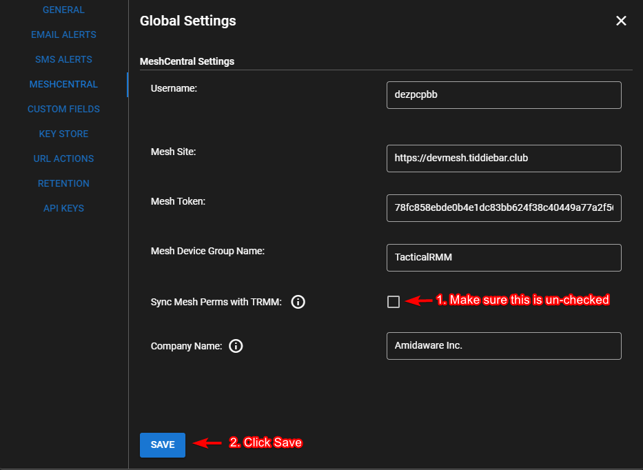
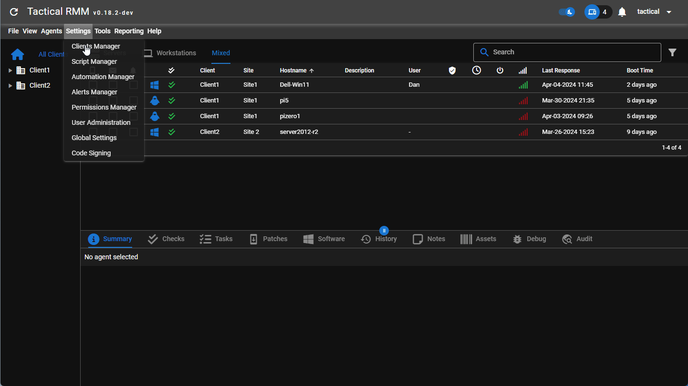
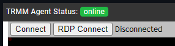

MeshCentral Integration¶
Overview¶
Tactical RMM integrates with MeshCentral for the following 3 functions:
- Take Control.
- Real time shell.
- Real time file browser.
Note
MeshCentral has issues with Firefox, use a Chromium-based browser.
It should be noted that Tactical RMM and MeshCentral are 2 completely separate products and can run independently of each other.
They do not even have to run on the same box, however when you install Tactical RMM it simply installs MeshCentral for you with some pre-configured settings to allow integration.
It is highly recommended to use the MeshCentral instance that Tactical installs, since it allows the developers more control over it and to ensure things don't break.
How does it work?¶
Please watch this video to fully understand how mesh integrations and permissions sync work.
MeshCentral has an embedding feature that allows integration into existing products.
See Section 14 - Embedding MeshCentral in the MeshCentral User Guide for a detailed explanation of how this works.
The Tactical RMM agent keeps track of your Mesh agents, and periodically interacts with them to synchronize the Mesh agent's unique ID with the Tactical RMM database.
When you do a take control / terminal / file browser on an agent using the Tactical UI, behind the scenes, Tactical generates a login token for MeshCentral's website and then "wraps" MeshCentral's UI in an iframe for that specific agent only, using it's unique ID to know what agent to render in the iframe.
Customize Take Control Username¶
If you've enabled any of the remote control options such as "Notify user", "Prompt for consent" and "Show connection toolbar" and you'd like to change the name that users see, make sure the user has a First and/or Last name set TRMM (Settings > User Administration). If you would also like your company name to show, you can set your company name in TRMM > Settings > Global Settings > MeshCentral.
Turn off the sync feature¶
If you're having issues with the new MeshCentral sync feature added in TRMM v0.18.0 you can simply disable it to revert back to the previous behavior prior to this release, although you're probably just looking for way to get the old mesh interface back:
From TRMM's web interface go to Settings > Global Settings > MeshCentral
-
Un-check the "Sync Mesh Perms with TRMM" checkbox, and click Yes to the "are you sure" prompt.
-
Click "Save"

Toggle a full permissions re-sync¶
From TRMM's web interface go to Settings > Global Settings > MeshCentral
-
Un-check the "Sync Mesh Perms with TRMM" checkbox, and click Yes to the "are you sure" prompt.
-
Click "Save"
-
Re-open the same settings window and check the same checkbox, click yes to the prompt, and Save.
-
Wait a few minutes for the sync to fully complete in the background.
Video

Get a url to login to mesh as the mesh superuser¶
This will generate a url that will log you into meshcentral as the superuser, the same way it used to be prior to TRMM Release 0.18.0
You should open this in a different browser than the one you're using for TRMM, or open in an incognito window.
/rmm/api/env/bin/python /rmm/api/tacticalrmm/manage.py get_mesh_login_url
Modifying the Internal Mesh Port Configuration¶
By default, Tactical RMM configures the Mesh service to listen on the internal port 4430. Should there be a need to modify this default port within the Nginx or Mesh configuration, it is imperative to update Tactical RMM with the new port information. To accomplish this, the following entry must be added to the file /rmm/api/tacticalrmm/tacticalrmm/local_settings.py:
MESH_PORT = <new_port_number>
Replace <new_port_number> with the actual port number you have configured. For example, if the new port number is 1234, the entry should be as follows:
MESH_PORT = 1234
Then, restart your entire server for changes to take effect.
Running your own existing or separate MeshCentral server?¶
We do testing to make sure everything works with the version found here (look for MESH_VER).
Installation instructions for using your own MeshCentral server:
- Run standard installation.
- After installation is complete, disable meshcentral
sudo systemctl disable --now meshcentral. - In TRMM Web UI go to Settings > Global Settings > MeshCentral and update values from your existing mesh (make sure to use a mesh superuser). Username MUST be all lowercase. Mesh Token find with this
- Add
USE_EXTERNAL_MESH = Trueto/rmm/api/tacticalrmm/tacticalrmm/local_settings.py - Restart TRMM server.
Info
Mesh usernames are CaSe sEnSiTive
Take Control Connect vs RDP Connect¶

When using Take Control from Tactical RMM you are using the Desktop function in MeshCentral
Connect button:
Right-click the button for options.
About the same a VNC, but it's not compatible with VNC. The original VNC protocol did not use JPEG, instead it uses RLE encoding or ZRLE. MeshCentral's remote desktop only uses JPEG (or WEBP in some cases) because browsers can decode JPEG easily.
The MeshAgent will split the desktop into 32x32 pixel tiles and see if any of the tiles have changed. If a group of tiles change since the last frame, a JPEG is sent to update the area.
RDP Connect button:
Is a browser based RDP client. It connects to the native RDP in versions of Windows that support inbound RDP connects. Pro, Workstation, Enterprise, Server, Terminal Server, RDS Server etc. You must enable RDP in Windows to be able to connect to it, it's not enabled by default (or enable when installing agent if supported).
Note
It does not work for Windows Home because Home doesn't support incoming RDP connections.
Remote Terminal how it works¶
For the remote terminal, we launch a shell on the remote system and pipe VT100 terminal emulation to/from the browser. On the browser, we use XTermJS to view the terminal session.
MeshCentral Options¶
There are MANY MeshCentral options that you can configure. Here are some you might want to investigate:
tlsOffload (for proxy users)
Using Tactical RMM Without MeshCentral¶
Install Tactical RMM normally. Then, to disable the MeshCentral Server on the TRMM server run:
sudo systemctl disable --now meshcentral mongod
Then when installing an agent, make sure to pass the -nomesh flag to the installer
Fixing missing agents in TRMM or Mesh¶
Fixing Missing agent
From the Script Library run: TacticalRMM - Install Mesh Agent if it's not installed
Then from trmm web ui right click agent > agent recovery > mesh agent
Use mesh to run the trmm agent installer with the --nomesh flag.
Then from trmm web ui right click agent > agent recovery > mesh agent
OMG MeshCentral isn't maintained anymore!¶
MeshCentral is still actively being maintained, the lead devs had jobs in which they were paid by a corporation to develop MeshCentral, they now have got other jobs which means they are supporting and developing MeshCentral in their free time (like alot of other projects) this means development is slower but not that it isn't maintained anymore. If this changes or it becomes necessary to fix something that breaks or packages needing updated we are prepared to begin maintaining our own fork. The features of MeshCentral that TRMM uses are only the 3 items above and are extremely mature.